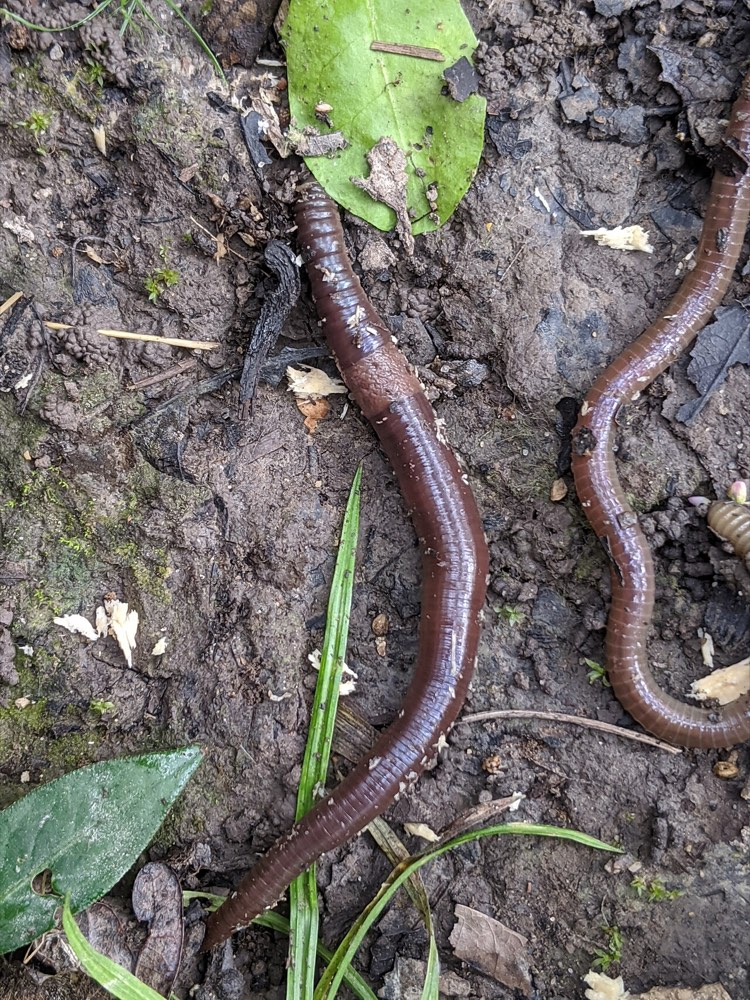

Jumping Worms
Amynthas tokionensis, Amynthas agrestis, Metaphire hilgendorfi (spelled hilgendofri on the page)
All of Vermont's earthworms are non-native (19 species are known). Three Asian species called jumping worms are invasive and change forest floors.
- Also called
- Asian jumping worms, Crazy snake worms, Snake worms, Alabama jumpers
- Kind
- worm · Megascolecidae
- Legal status
- Not stated on the VTinvasives page; not on the Agency of Agriculture plant quarantine list (plants only) (checked 2026-10-30)
- Look-alikes
- European nightcrawler; Common earthworm
Pictures

Names
Amynthas tokionensis (1 to 4 inches; about 70 percent of Vermont's jumping worms), Amynthas agrestis (3.5 to 5 inches; about 25 percent) and Metaphire hilgendorfi (4 to 8 inches; about 5 percent). They are mostly parthenogenetic: one worm can found a colony.
Range
Confirmed in all Vermont counties except Essex and Orleans (VTinvasives page, from iNaturalist reports). Check the current map; the status near your land is not recorded here.
How to identify (by season; look-alikes and the key difference)
- Body: smooth, glossy, dark gray or brown, firm and not coated in slime.
- Clitellum (the band near the head): cloudy white to gray, completely encircling the body and flush with the surface. In European earthworms it only partly wraps the body, like a saddle. Easiest to see on adults.
- Behavior: thrashes violently when handled, may jump, and may shed its tail.
- Where: usually in large numbers; the soil becomes grainy with castings like coarsely ground coffee. Cocoons blend into the casting layer.
- Look-alikes: European nightcrawler and common earthworm.
Through the year
Dates are typical for Vermont and shift with elevation and year; "approximate" means the source gave a season and the dates are a translation of it.
| When | What | Look for | What to do | Dates |
|---|---|---|---|---|
| All year | survey (avoid) | Arrive clean, leave clean: remove soil and debris from boots, vehicles, equipment and gear; do not move soil, mulch or compost from infested sites; never release live worms into woods or gardens. | - | stated |
| Jun 1 to Sep 30 | survey (watch) | The months the state recommends for looking. Castings like coarsely ground coffee and grainy soil; glossy dark gray-brown worms that thrash or jump when handled. | Pour a diluted dish-soap solution slowly over a patch of soil; worms come to the surface. | stated |
| Aug 1 to Oct 15 | adult (identify) | Adults are found from August; populations peak in late summer to early fall. Check the clitellum: cloudy white to gray, completely encircling the body and flush with the skin (a European earthworm's wraps only part of the body like a saddle). | - | approximate |
Habitat and spread
Adults die each winter; the cocoons overwinter in soil or leaf litter and hatch when it warms to about 50 F (which can happen in a January thaw). Hatchlings survive from April, mature in 60 to 90 days, and populations peak in late summer to early fall. Each worm makes about one cocoon every other day. They spread on soil, mulch, compost, nursery root balls, footwear, vehicles and equipment.
Damage
They change soil temperature, chemistry and moisture, and reduce the forest-floor organic layer and the herbaceous layer. The page says this may affect seed banks, salamanders, birds and the maple sugar industry, and may help invasive plants spread.
Control (by method, timing, follow-up, what not to do)
- No approved pesticide for earthworms exists at present (stated on the page).
- Killing worms you find: soak in rubbing alcohol; soak in soapy water for 15 minutes to 2 hours; or seal in a bag, freeze for a few hours and put it in the trash. Do not release live worms into compost, gardens or woods.
- Mulch and compost: minimize use; buy or trade only material heated to temperatures and times that reduce pathogens. Cocoons need sustained temperatures below 12 F or above 100 F to die. Soil solarization is suggested.
- Movement: clean boots and gear when leaving; inspect nursery root balls and prefer bare-root stock or seeds. Do not buy these worms for bait, gardening or composting.
- Report sightings on iNaturalist.
Legal status
Not stated on the page read. Ask the county forester or the Agency of Agriculture whether any rule limits selling or moving them.
Sources
- Vermont Invasives, Jumping Worms: https://www.vtinvasives.org/invasive/jumping-worms (read 2026-10-30, no update date shown)
- Vermont Invasives search summaries (not read in full): jumping worm best management practices for nurseries and landscapers; Forest Health pages
What this page is based on
Kind of source: primary-agency (VTinvasives species page, read as a summary)
What was read: The VTinvasives species page for jumping worms, read through a summarizing fetch on 2026-10-30. The page gives no legal status and no last-updated date; it describes the life cycle by season rather than by date (cocoons hatch at 50 F, hatchlings survive as of April, adults from August). The 'adult' window is a translation of 'as of August' and 'late summer to early fall'. The 70/25/5 percent species shares, the figure that two counties lack records, and the soap-test wording were on the page; the Forest Health page's '12 of 14 counties' was a search summary.
Last checked: 2026-10-30
Vermont land and forest reference, built 2026-10-31. Rules and dates here are summaries, not legal advice; dates shift with elevation and year. Photo credits · Note: _reference/US-VT/Invasives/Jumping Worms.md